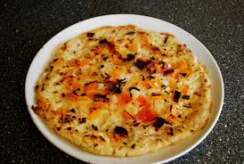

Home
Uttapam

Description
Uttapam is a delicious South Indian savory pancake made from a fermented batter of rice and urad dal (black gram). Unlike the crisp dosa, uttapam has a soft, fluffy texture and is topped with vibrant vegetables like onions, tomatoes, green chilies, and coriander leaves. The batter is poured thick onto a hot griddle and cooked slowly, allowing the vegetables to lightly caramelize while the pancake turns golden. Often enjoyed with coconut chutney and sambar, uttapam makes for a hearty breakfast or satisfying snack that’s packed with flavor and nutrition.
Ingredients
For the batter
- 1 cup rice
- half cup udad dal
- ¼ teaspoon fenugreek seeds (optional, helps fermentation)
- Salt to taste
- Water (for soaking and grinding)
For the topping
- 1 medium onion, finely chopped
- 1 small tomato, finely chopped
- 1–2 green chilies, finely chopped (optional for heat)
- A handful of fresh coriander leaves, chopped
- Grated carrot or capsicum (optional but adds extra color & nutrition)
- Oil or ghee for cooking
Steps
- Soak the rice and urad dal (and fenugreek seeds if using) in water for at least 4–6 hours or overnight.
- Drain the soaked ingredients and blend them into a smooth batter, adding water as needed to achieve a thick but pourable consistency.
- Ferment the batter in a warm place for 8–12 hours until it rises and becomes slightly bubbly.
- Once fermented, stir the batter gently and add salt to taste.
- Heat a non-stick skillet or tawa over medium heat and grease it lightly with oil or ghee.
- Pour a ladleful of batter onto the skillet, spreading it into a thick pancake shape.
- Sprinkle the chopped vegetables evenly over the top of the batter.
- Cook on medium heat until the bottom is golden brown, about 3–4 minutes. Flip carefully and cook the other side for another 2–3 minutes.
- Serve hot with coconut chutney and sambar.